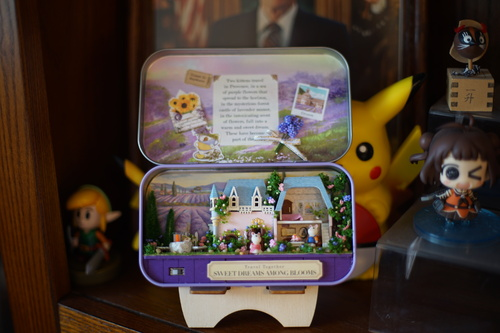
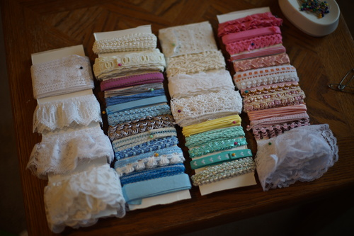

hard to believe ive had her for 8 years! shes much older than 8 years old and she probably hasnt even been with me for half of her life. she's between 16 and 18 years old! her box opening is here for anyone interested ;3

i love her so much. i'm so glad i was able to find her. here's one of the first photos i took of her once i had given her a faceup and assembled her! she's wearing the same wig she is now, but straightened, and liam's eyes because I didn't have any for her yet!

i was so overjoyed with her that i posted pictures of her all over social media! and ryan sent this back. dont send doll pictures to ryan. he's rude!!

i finished the mini model kit my bestie bought me at the beginning of this year. she told me her bf had bought her a couple kits for christmas and i said they sounded fun so she surprised me by sending me one off amazon! she is so sweet!
i had some fun doing it but i felt like a grad student doing grunt work instead of enjoying it. the kit kinda sucks because all the paper cut outs don't actually fit the items perfectly like i expected them to. also the pieces dont fit together perfectly at all. i couldnt get the supplied glue open so i used my own glue and i suppose its possible to glue porous stuff to metal but my glue sure couldnt. anything with gluing fabrics together just did not work. so much of the detail is just printed paper and that feels like a cop out to me. the soldering broke between the board and the lights and i didnt care to resolder them so i just called it on the lighting. i dont plan on doing one again no matter how cute the stock images are.
i also got one extra piece in it. if youre missing a piece of the house, i probably have it. this ofc does not bother me but i would be angry to be on the other side of the issue!
i sat down and organized my pile of trims and laces today. hopefully this will make them easier to use than their previous state of tangled mess. i just used some cardboard to wrap them and then pinned them in with a sewing pin. it took a while!